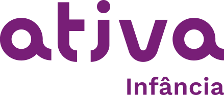

de actividades
Quiénes
Somos
Somos la Fundación Raízen, institución sin fines de lucro que, desde hace 20 años, se ocupa de la educación de niños y jóvenes en situación de vulnerabilidad social.


Nuestra energía activa el presente para el futuro de todos, por medio de programas que ofrecen educación y estimulan habilidades socioemocionales para que cada vez más personas sean capaces de soñar y realizar, protagonizando sus propios caminos.
Apectos
destacados
del año
de empleados y empleadas apacitados en temas como salud, seguridad y metodología de programas
niños, niñas y jóvenes
beneficiados
personas beneficiadas
directa e indirectamente
Dónde
estamos
No dejamos de soñar...
ni de realizar
a pasamos por
25
municípios
ddiferentes de distintas regiones de Brasil
Mensajes
de los líderes
Programas
 Programa destinado al desarrollo pleno de la primera infancia, con formación reglada a jornada completa y actividades complementarias.


alumna de São Francisco do Conde, Bahia
Leer
más


arriba